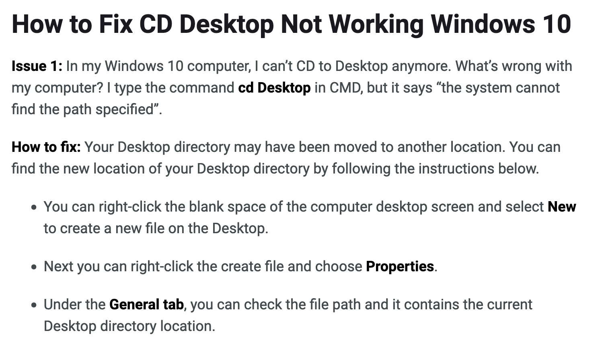
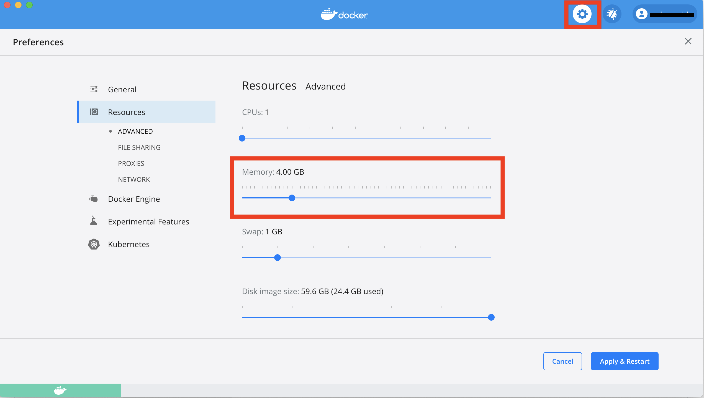
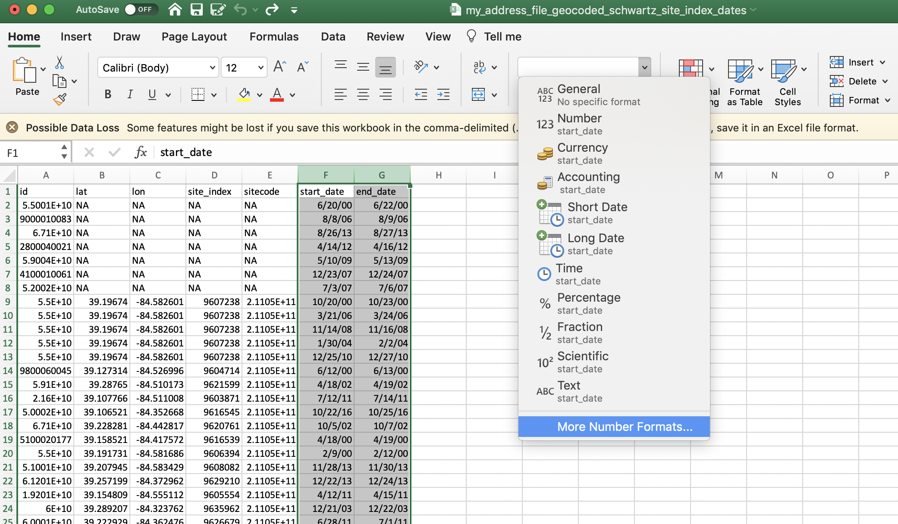
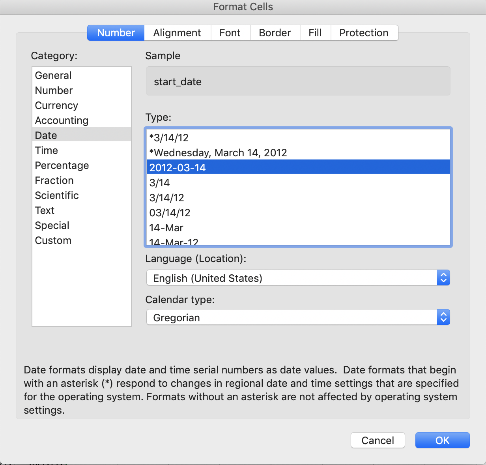
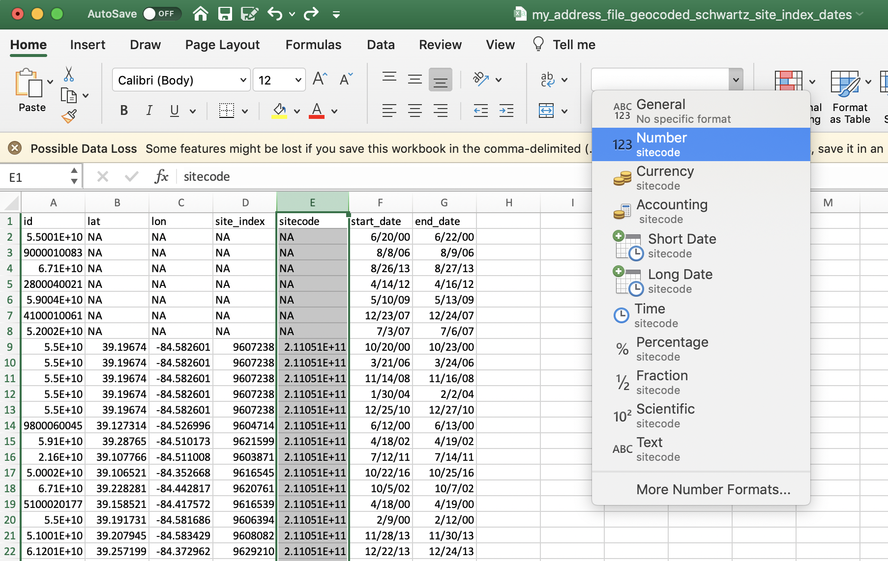
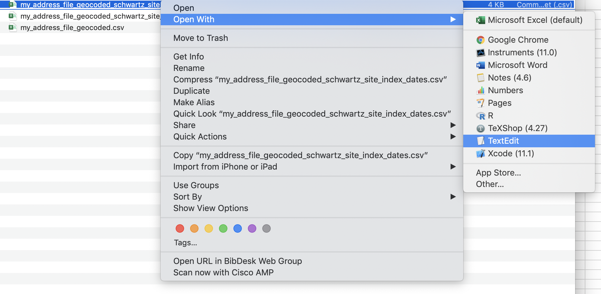
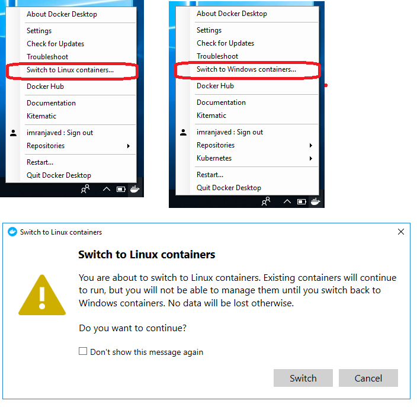

Troubleshooting
PWD
Problem
Calling DeGAUSS results in an error along the lines of:
C:\Program Files\Docker\Docker\Resources\bin\docker.exe: invalid reference format.
See 'C:\Program Files\Docker\Docker\Resources\bin\docker.exe run --help'.or DeGAUSS complains that it cannot find the
my_address.csv file within the working directory of
/tmp
Solution
In a DeGAUSS command, the -v argument tells Docker to
bind the current directory to the /tmp directory inside a
container so that it can read the input file and write the output file
back to the current working directory on the host platform.
The Windows Command Line (CMD) does not support the
$PWD environment variable and so instead of using that to
specify the bind point (-v $PWD:/tmp) you will have to use
a Command Line variable, %cd, for example:
-v %cd%:/tmp or
docker run --rm=TRUE -v "%cd%":/tmp degauss/pepr_roadways:0.3 my_address_file_geocoded.csv
Please note that when you are using the command line variable,
%cd%, your file path and filename cannot include
spaces.
Alternatively, you can specify the full path to the folder,
substituting / for \. For example:
-v C:/Temp/docker_testing:/tmp or
docker run --rm=TRUE -v //c/Users/<your_username>/Desktop://tmp degauss/cchmc_batch_geocoder my_address_file.csv
When using Windows PowerShell, by placing the PWD inside
curly brackets, you are able to specify the current working directory.
For example: ${PWD} or
docker run --rm -v ${PWD}:/tmp degauss/geocoder:3.0 my_address_file.csv
OneDrive: If you or your institution use OneDrive,
your working directory may have a different path than expected. If you
have navigated to your Desktop using cd Desktop and your
file cannot be found, or if you cannot navigate to your Desktop, use the
instructions below to check your Desktop path. Alternatively, you could
drag and drop your input file into the command prompt to view it’s path.
After locating your Desktop path, replace Desktop in
cd Desktop with the new path.

Insufficient Memory
Problem
DeGAUSS seems to run without reporting any errors, but does not
produce an output file. Intermediate directories (Rtmp...,
cache, degauss_cache) directories are created,
but the program seems to terminate prematurely.
Solution
Some of the DeGAUSS images require a large amount of system memory, or RAM, to complete the operation. If insufficient memory is available to Docker, then the DeGAUSS image will fail without notifying the user. This can be fixed by increasing the amount of RAM allocated to the virtual machine hosting Docker using Docker’s settings. These can usually be accessed through a menu found by right-clicking the Docker icon in the Windows Notifications area / System tray or the macOS Menu bar.

Docker running on the Windows Subsystem for Linux engine doesn’t have
these options, but can be set within the .wslconfig
file:
[wsl2]
kernel=C:\\temp\\myCustomKernel
memory=4GB # Limits VM memory in WSL 2 to 4 GB
processors=2 # Makes the WSL 2 VM use two virtual processorsRegistry Transition
Problem
A DeGAUSS docker run command returns an error such
as
Unable to find image 'degauss/aadt:0.1.1' locally
docker: Error response from daemon: manifest for degauss/aadt:0.1.1 not found: manifest unknown: manifest unknown.Solution
Until December 2021, all DeGAUSS images were hosted using DockerHub
and could be called using
degauss/<geomarker_name>:<version>. Most
DeGAUSS images (including current and previous versions) are now
also hosted via the GitHub Container Registry. Beginning in
December 2021, all newly created images will only be available
on GitHub Container Registry and must be called using the full naming
structure:
ghcr.io/degauss-org/<geomarker_name>:<version>
Refer to our list of available images for proper naming of each image. To see a full docker command with the appropriate image naming convention, follow the link from the available images table to the image’s README page.
Microsoft Excel
Opening an input CSV file in Microsoft Excel can change column formats resulting in incorrect results from DeGAUSS containers. If opening the CSV in Excel before feeding it to a container cannot be avoided, please follow the guidelines below for ensuring columns are formatted properly.
1. Dates
Excel autoformats dates, usually as MM/DD/YY, regardless
of the format in which the user supplied the date. Further, Excel will
display a date in that format even if the actual value
is stored in a different format.
DeGAUSS containers work best when dates are formatted as
YYYY-MM-DD. You can change this format manually in
Excel.
Highlight your date column(s) and select “More Number Formats”. Then,
under Date formatting, select the
YYYY-MM-DD format and click OK.


2. Large numbers
Excel will often display large numbers in scientific notation. If large numbers do not remain formatted numerically, some digits could be stored as zeros, (e.g., the number 123456789 could be stored as 1.2E8, which could then be converted to 120000000).
Similar to formatting the dates, you can manually format large numbers in Excel.

Excel display vs. actual cell values
Excel’s display will probably not show these changes if the file is saved, closed, and re-opened. One way to see the actual values of the csv file, is to open with a simple text editor, like notepad or TextEdit.


Docker Containers for Windows
Problem
Within Windows terminal, trying to pull or run a Docker container
results in an error:
docker image operating system "linux" cannot be used on this platform
or
DeGAUSS (or docker run hello-world) returns an error
along the lines of
no matching manifest for windows/amd64 in the manifest list entries
Solution
Switch Docker settings to use Linux Containers instead of Windows Containers. Follow these steps:

screenshot from this stackoverflow post
Parallel Computing on Windows
Problem
When running a DeGAUSS container on Windows it results in an error:
Error in fifo(tempfile(), open = "w+b", blocking = T) :
cannot open the connection
Execution haltedSolution
This error occurs because some Windows platforms cannot support the R code used for parallel computing. Although this option is enabled by default and cannot be changed by the user, a workaround is to set the Docker host to use only 1 CPU. This can be done in the Docker settings panel and will force the container to use only a single thread.

Proxy
Problem
DeGAUSS (or docker run hello-world) returns an error
along the lines of
x509: certificate signed by unknown authority
Solution
DeGAUSS users from research institutions with networks that contact the internet through a proxy often face this problem. The root problem is that the Docker virtual machine does not have access to the certificates installed on the host machine.
A lot of institutions responsible for protecting PHI will “intercept” incoming and outgoing internet traffic by appending their own certificates in order to sniff the data that is traveling between a computer and the internet on their network. Thus, when a user attempts to use the institution’s network to contact an HTTPS site with a computer that doesn’t have the right security certificates (such as is the case here with the virtual machine running Docker), the browser or download protocol will usually refuse because the mismatched certificates are a red flag that someone is trying to “man in the middle” attack the user. This isn’t a problem unique to Docker — browsing any HTTPS site, e.g. google.com, will return the error if this is the case.
The long fix is to update Docker to utilize the institution’s proxy, either through environment variables passed at call time or in the Docker settings. The short fix is to run the Docker commands while connected to a network not connected to a proxy. Assuming this is compliant with the institution’s rules on PHI (it usually is), then you can do this by using your institution’s guest network, your own personal network at home, or another “public” wireless network.
Note that this wouldn’t necessarily require any of the PHI to be on
the computer when its connected to non-proxied network. A workaround
could be to connect to a different network to docker pull
the image and then docker run after switching to the
institutional network and adding the data back to the machine. Once an
image is pulled, the container can be successfully run without internet
access.